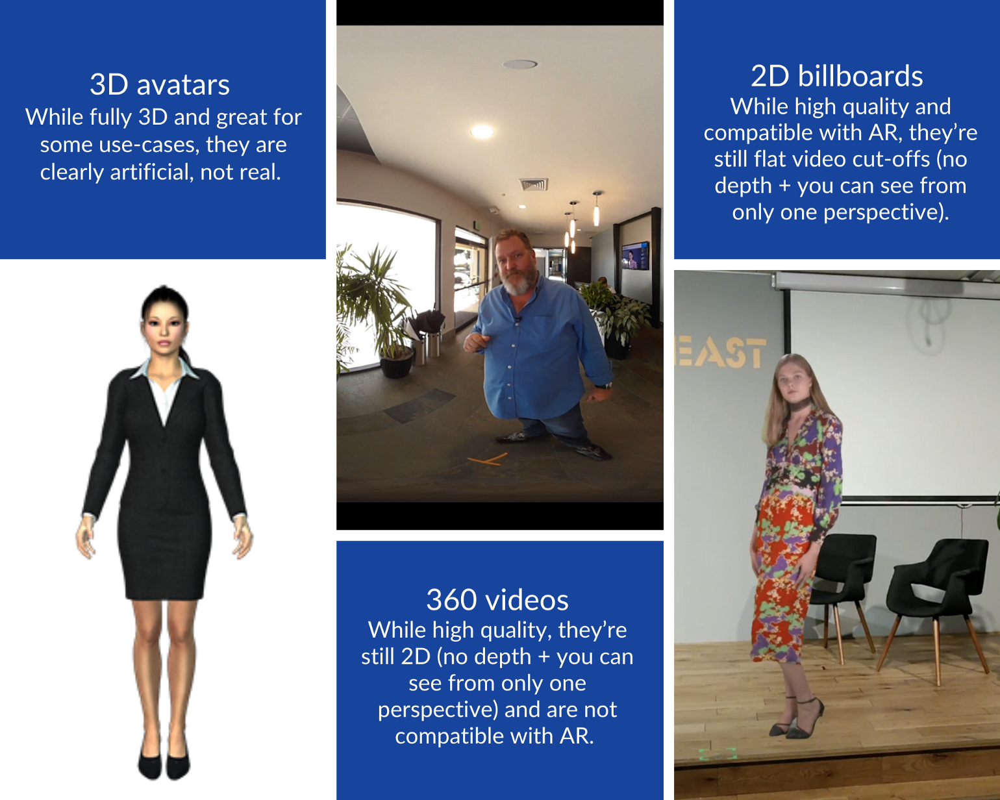
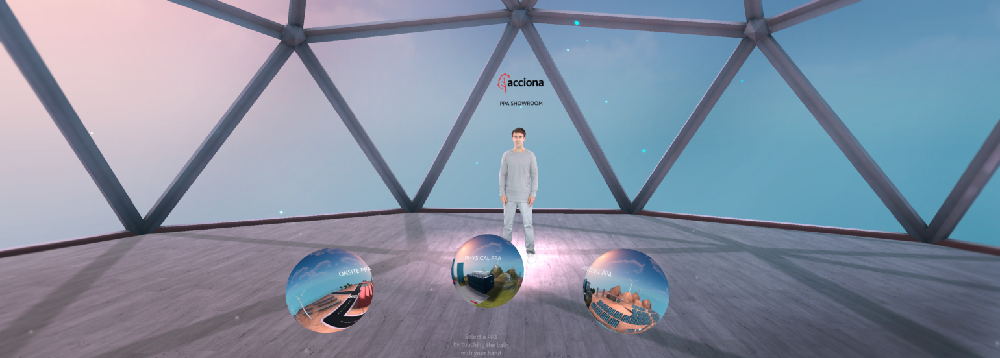

体三维全息投影，把真实人物带入沉浸式媒体中。
“我们太需要让我们的用户惊艳的体验了！” 这句话可能很多人经常在会议或者头脑风暴中听到，那么什么才是AR、VR最让人惊艳的体验呢。
AR/VR内容极大的模糊了虚拟与现实的边界，极大的拓宽了人类对世界认知和学习的方式。
在很多的工作场景中你需要传递信息或者做出合适的解释给你的客户、员工、股东，但是你又可能没法到场时怎么办？现在基本上都是视频直播或者视频会议，一堆人围着一个小方框看着里面那个会说话的小人。直播博客中基本情况也是如此，大多数时候观众只能看到一个会说话的脑袋。你如何才能从一大堆的内容和频道中脱颖而出，抓住你观众的注意。爆炸性的新闻和独家的特色么？但是事实是在现在媒体过度膨胀的时代，这很难。所有人对这些内容都感到了疲惫和厌倦。一堆小丑在一起耍嘴皮，这就是你想看的东西？
“In a busy marketplace, not standing out is the same as being invisible.” Seth Godin—前篇一律的东西是很难在这个繁忙的时代脱颖而出。
随着5G和超宽带技术的发展，越来越多的人在寻找一种新的媒体形态–沉浸式媒体。增强现实（AR），虚拟现实（VR），或者是ARVR统称的XR技术具有很大的潜力，ARVR内容在传递信息时作为沉浸式媒体缺少了标志性的特色—把人本身以最完美的演绎方式带入的avr现实设备中展现在人面前，从而超越传统的视频和照片或者虚拟的人物形象。
AVR的从业者们孜孜以求的wow内容最返璞归真的可能是最朴实无华的人物、动物这些最原始的形象，从山顶洞人的壁画，到清明上河图，到电影、电视、动漫，无不倾力展现的人和世界间的种种事情，人们一只希望能用一种方式永远记住那些转瞬即逝的瞬间。

“Wonder is honest. It’s completely innocent. It can’t be artificially evoked. For me, there’s no greater ability than the gift of another human being giving you that feeling.” Andrew Stanton, film director, Pixar
皮克斯著名导演安德鲁·斯坦顿说：“奇迹是是真诚的，最纯粹的。无法被凭空捏造。对我来说，再也没有比其他人带给你的天赋给你更好的感受了”
体三维视频（Volumetric Video，Volumetric Capture，or Volumetric，以后简称VV）解决了这个问题。捕捉真实人物的体三维全息视频是革命性的，通过体三维捕捉技术把现实世界物体或者人物作为3D内容序列作为一种特殊的视频取代传统。而传统的视频基本都是通过一个取景框把三维世界投影到一个二维平面上，人们在观看时候无法得到足够原始信息来体现临场感。通过VV技术生成的视频，可以给观看的人带来全方位的沉浸式内容体验。这种内容可以在AR、VR设备中观看，甚至以3D内容方式出现在手机和电脑屏幕上观看。
VV视频在制作时候需要用到3D扫描设备来记录深度信息，多个设备扫描的3D信息可以通过点云算法合并修正形成更高质量的VV视频
说了这么多概念，相关的体验内容：
 U管
B站
体三维视频是一种新的沟通解释复杂概念和产品的方式。他让观众用户更容易理解你需要描述的理念—Edgar Martin-Blas, Virtual Voyagers
Virtual Voyagers 帮助Acciona带着他的关键客户到世界各地参观新能源可再生能源项目，Lux给这些关键的客户解释帮助他们理解这些项目。
其他一些案例
另外就是移动AR应用，Jadu–Musical Holograms，iPhone和Android都有，不过需要国外账号
https://apps.apple.com/hk/app/jadu-musical-holograms/id1498970826
体三维视频技术目前处于逐步走向成熟过程中，但是相应的制作手段还不能做到非常廉价，最廉价的方案目前也需要3-6个 Kinect4来提供可接受的质量，更好的质量需要多个单电来提供输入。
观看方式：

局限：
目前主要的局限是景深范围有限，只能采集近景人物动物和物体，不太适合大空间采集，但是在一定程度上有些小场地体育比赛是适合的，比如乒乓球、搏击
多设备制作时候需要实时合成中间难免对硬件和实时性有一定的影响。
主要的3D采集方式主要是看深度信息估算，目前有多重方式，LiDAR雷达、Kinect、多摄像头深度计算（精度不够好）。这几种成本都不低。但是激光雷达可能在未来成为手机标配。
< 如需了解任何体三维全息视频的信息请给我发邮件wikieden@gmail.com